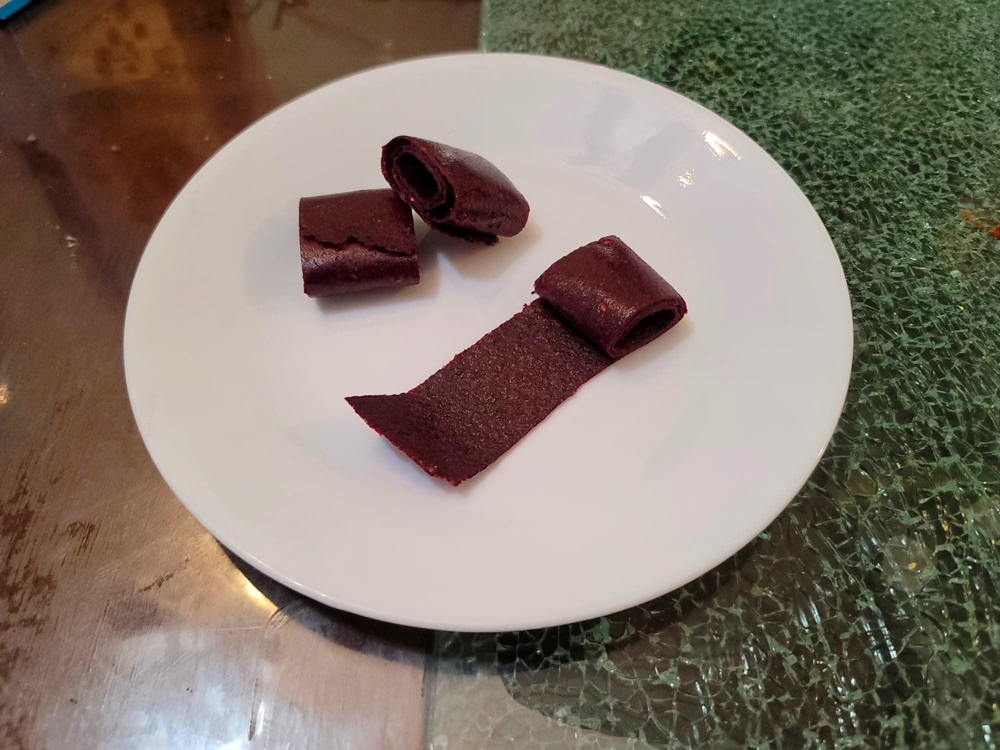

Fruit Leather

Ingredients:
- Any Fruit
- Optional: Honey or Maple syrup
Instructions:
- Blend the fruit in a blender until completely smooth. Place into a dehydrator in a thin layer, between 1/4" - 1/8". Let dehydrate for about 8 hours or until completely dry to the touch.
- Peel off of the dehydrator tray and roll into a log. Optionally cut the log into roughly 1 inch segments. Serve immediately or store for later.